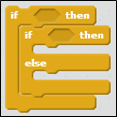
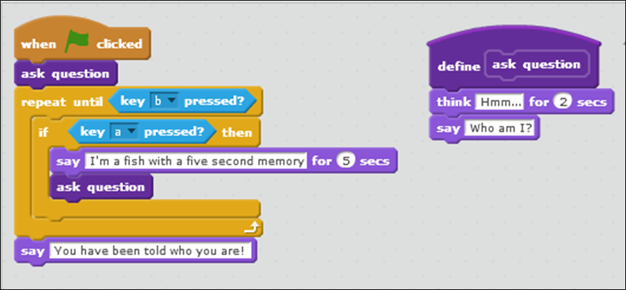
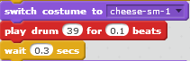

Objectives
On completion of this lab you should be able to write more complex programs demonstrating flow of control, variables, operators, and newly introduced constructs of nested if statements and methods.
Opening the Scratch Development Environment
- If you have your own laptop and have installed scratch, please refer to the STEP B (ignore STEP A).
- If you are using the WIT computers, please refer to STEP A (ignore STEP B).
STEP A - Using the Online version (for those using WIT computers)
- Navigate to the following website (open up a new tab in your browser): https://scratch.mit.edu/scratch_1.4/
- You should now have the online editor open, as shown in the screen shot below:
STEP B - Using the Offline version (for those that installed it on their laptops)
- Open Windows Explorer by holding down the windows key and pressing the letter E once.
- When Windows Explorer opens, navigate to the folder where you installed Scratch.
- Double click on the icon (highlighted red below) to start Scratch.

SomethingFishy - Example 5, Version 2
- In this step, you are going to refactor (change) SomethingFishy5 so that it uses nested if statements.
Cloning SomethingFishy5
Make a copy (i.e. clone) of the SomethingFishy5 file and call it SomethingFishy5v2.
Open the SomethingFishy5v2 file in Scratch.
Refactoring SomethingFishy5 to use nested if statements
- Currently, your program looks like this:
- Change (refactor) it so that it uses nested if statements i.e.:

- Try to change the code without looking at the lecture notes. If you are having difficulty, refer to them. It is natural to have some difficulty, so don't worry if you have to refer to the notes.
Test your program
- Click on the green flag to run your program.
Does it work as expected?
- Does your fish say "Who am I?"? The counter variable should hold a value of 0 at this stage.
- Does your fish, only tell the user 3 times that “I’m a fish with a five second memory”?
- If the user asks a 4th time (i.e. they press the ‘a’ key a 4th time), does your fish thell them they have already been told 3 times? Your program should stop running here.
Saving your work
- Save your work, calling the file SomethingFishy5v2.
SomethingFishy - Example 6
- In this step, you are going to write a method and call it twice.
Set up your fish Sprite
- Create a new file.
- Add a fish sprite.
- Delete the cat sprite.
SomethingFishy6
- In the following program, you can see that there is duplicated code:

- Your task is to create a method (i.e. block) that contains the two statements. Call this method ask question.
- Delete the duplicated code, but call the ask question method in its stead.
- Try to change the code without looking at the lecture notes. If you are having difficulty, refer to them. It is natural to have difficulty, so don't worry if you have to refer to the notes.
Test your program
- Click on the green flag to run your program.
- Does it work as expected? Have you tested both the a and the b key? What about testing a different key, say, c?
Saving your work
- Save your work, calling the file SomethingFishy6.
SomethingFishy - Example 7
- In this step, you are going to refactor (change) SomethingFishy6 so that it uses method that has one parameter.
Cloning SomethingFishy6
Make a copy (i.e. clone) of the SomethingFishy6 file and call it SomethingFishy7.
Open your SomethingFishy7 file in Scratch.
Refactoring SomethingFishy7 method
- Currently, your program looks like this:

- Change (refactor) it so that it now has a method called askQuestion that accepts a number parameter, called duration.
- Try to call this new method from the code without looking at the lecture notes. If you are having difficulty, refer to them. It is natural to have some difficulty, so don't worry if you have to refer to the notes.
Test your program
Click on the green flag to run your program.
Does it work as expected?
Saving your work
- Save your work, making sure the file is called SomethingFishy7.
Pico Example
- In this step, you are going to write the PicoExample mini-game that we met in lectures.
Set up Pico and the background
- Create a new file and call it PicoExample.sb2.
- Add a Pico sprite.
- Change your background to the moon.
- Create a new sprite that will contain the instructions (see screen shot above).
Coding PicoExample
In this program, Pico can jump in one of three ways:
small jump (key S is pressed)
big jump (key B is pressed)
bespoke jump (key A is pressed followed by user input)
Your task is to create a method (called jump) that accepts one parameter, called how high. The processing in the method should:
Change the y value for Pico by the value passed in as a parameter i.e. jump.
Change the y value for Pico by the negative of the value passed in as a parameter i.e. return to his starting point.
Once this method is written, write the code so that jump is passed a value of:
10 when the user wants to do a small jump.
200 when the user wants to do a big jump.
the user input (between 1 and 250) when the user wants to choose how high they want to jump.
- Try to write the code without looking at the lecture notes. If you are having difficulty, refer to them. It is natural to have difficulty, so don't worry if you have to refer to the notes.
Test your program
- Click on the green flag to run your program.
- Does it work as expected?
Saving your work
- Save your work, calling the file PicoExample.
Exercises
The exercises are typically based on the material we covered in lectures and the previous steps in this lab, but you will need to research new items to complete these exercises.
For each exercise listed below, open a new Scratch project.
Exercise 1
Choose any sprite you fancy.
Click on the Motion scripts. You will see that there are a lot of statements that allow your sprite to move about the screen.
Use these to animate your sprite in any way you wish e.g. walk across the screen, dance, etc.
Exercise 2
Choose any sprite you fancy.
Click on the Looks scripts. You will see that there are a lot of statements that allow your sprite to change their look.
Use these to change the look of your sprite in any way you wish.
Exercise 3
Choose any sprite you fancy.
Click on the Sound scripts. You will see that there are a lot of statements that allow your sprite to make noise!
Use these to allow your sprite to make a series of sounds.
Challenge Exercise 1
In this exercise, you will:
familiarise yourself with a maze game whose source can be found here.
make changes to the Maze game so that it uses methods.
Go to the above link and download the MazeGame to your computer.
Open the game in Scratch and play it.
When you are familiar with how the game works, click on the mouse sprite. Have a look at the code associated with the mouse. Can you see the repetition?
Move this code into a method (you choose the name) and call it from each of the arrow events.
Could we amend this method to pass in the direction? Why, yes! Try it yourself.
Now, all that should be under each arrow event is a method call, passing in the value of the direction. You can check the solution below if you are having difficulty.
Now click on the cheese sprite. Can you see the code repetition here too?

Make a new method that will contain this code, and pass in the costume as a parameter.
Replace the repeated code with a call to the new method.
Test the game...does it work as expected? Have your changes broken anything?
Challenge Exercise 2
Did you notice a bug in the game? i.e. the mouse pointer has to hover over the cheese, before the mouse eats the cheese.
Click on the cheese sprite. Change the if statement so that it tests the mouse is touching the cheese and not the mouse-pointer.
Test your game. Is all ok?
Now lets try to improve the game:
Maybe when the mouse has eaten the cheese, notify the user that the game is over and they won.
Maybe add a "livesLost" variable? If the mouse hits the wall three times, the game is over and they have lost.
Can you add any other changes that would improve the game?
Challenge Exercise 3
In this exercise, we challenge you to develop your own game, animation or art, etc.
If you are falling short on inspiration, there are some examples here
We will ask you to submit your work via Moodle to us soon.
Solutions
The solutions to this lab can be found here.
Note that there are no solutions for the exploration style exercises listed above.